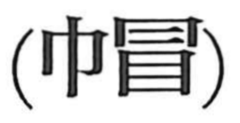

帽

Kun: | On: bou
cap ・ hat ・ headgear ・ hood
Explanation
Shirakawa sees 帽 as a phono-semantic graph: 巾, meaning cloth, provides the idea of a textile article, while the on-reading comes from the phonetic 冒 (in its older form 冐). That older form puts a cap-shaped 冃 over 目, the eye, picturing a deep hood pulled down so that only the eyes are visible; this image is the prototype on which 帽 was formed. Adding the cloth element 巾 to that figure specifies a cloth head covering, hence 帽 for caps and hoods. He also notes that in ancient China one did not remove one’s headgear before the nobility.